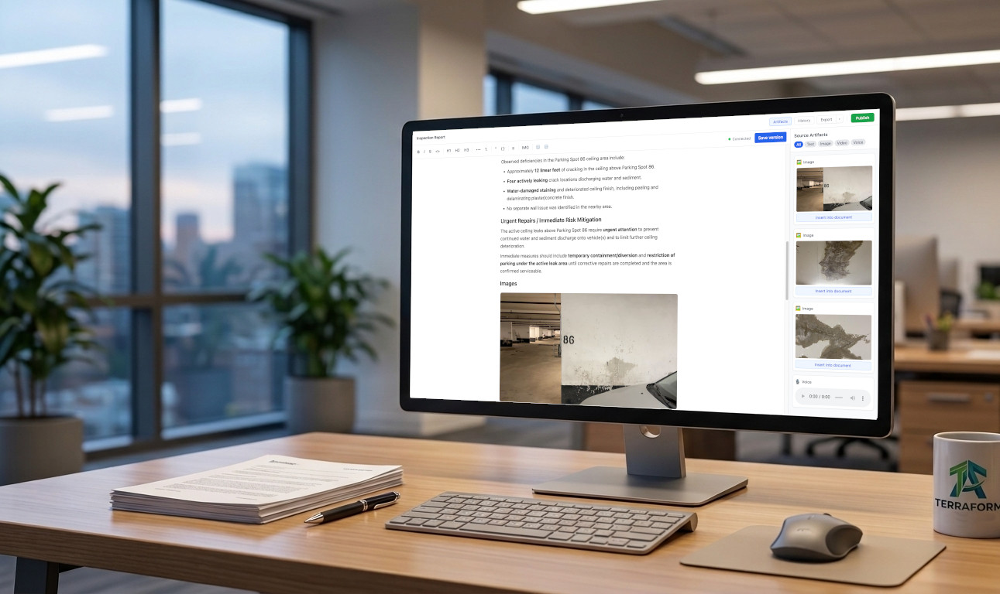
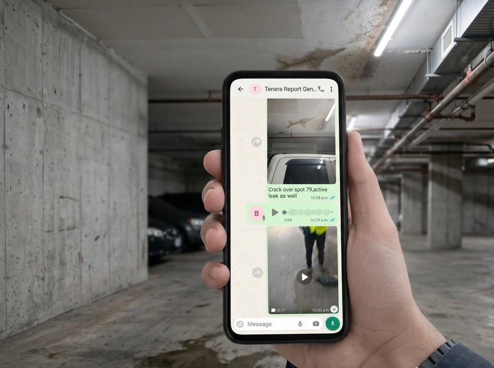
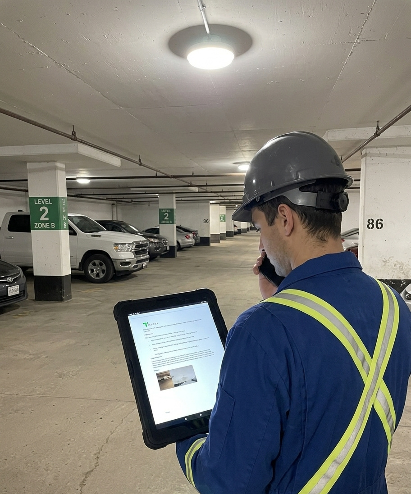

Tenera
Intelligent automation for property maintenance, from the field to the finished report.

Property managers and service providers were buried in manual workflows. Tenera needed a secure, scalable platform with AI at its core, and they needed it in market quickly.
The challenge
The property maintenance lifecycle runs on site visits, photos, notes and reports, passed between property managers and service providers. Most of it was manual.
Tenera set out to automate it with AI. That meant a platform that could be trusted with real client data, scale with demand, and be easy enough for people in the field.
What we built
- Architecture for a secure, scalable platform
- Intelligent automation across the property maintenance lifecycle
- Core workflow features for property managers and service providers
- Embedded delivery alongside Tenera’s in-house team


The product
From site visit to finished report. Photos, video and voice notes go in; a complete, formatted report comes out.
20–30Page technical reports, written by Tenera Reports in minutes, not hours
Field→ reportPhotos, video and voice notes in. A client-ready report out.
Partnering with OPlus Dojo has been a game-changer for us. Their team brought not only deep technical expertise in AI and scalable infrastructure but also a true understanding of how to translate complex workflows into seamless user experiences. They integrated effortlessly with our in-house team, consistently delivering high-quality solutions on time.

Next case studyRaLHF
View case